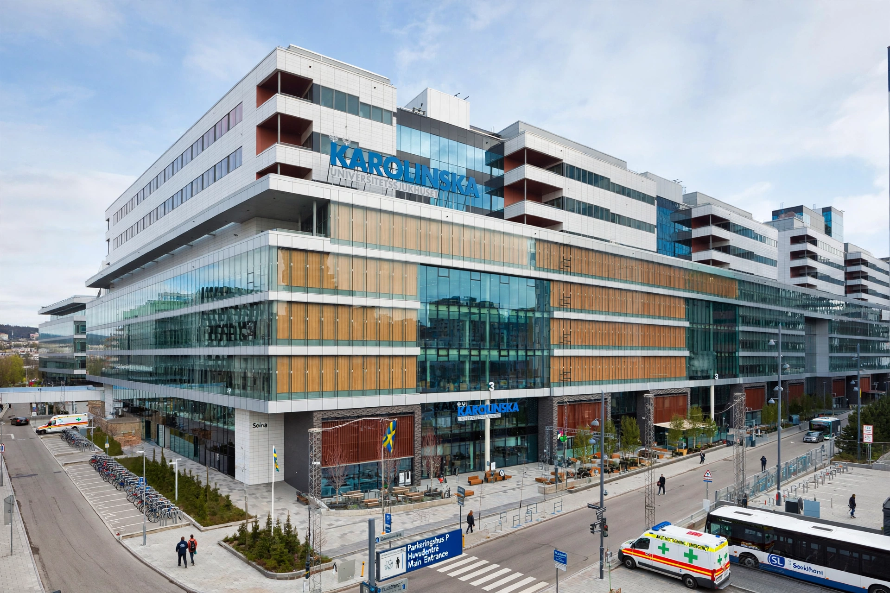

Karolinska University Hospital

The Karolinska University Hospital (Swedish: Karolinska Universitetssjukhuset) is a teaching hospital affiliated with the Karolinska Institute in Stockholm, Sweden, with two major sites in Solna and Huddinge. It is one of Europe's largest university hospitals and handles highly specialized care for patients from across Sweden and abroad.
History
The hospital was formed on 1 January 2004 through the merger of the former Karolinska Hospital in Solna (opened in 1940) and Huddinge University Hospital (opened in 1972). The merger created one of Sweden's largest healthcare organizations, employing roughly 15,000–16,000 people.
New Karolinska Solna
A new hospital building, the New Karolinska Solna (Nya Karolinska Solna), was constructed adjacent to the old Solna campus as one of the world's largest healthcare construction projects and a flagship public-private partnership. The first patients were received in late 2016, and the facility fully opened in 2018. The project drew criticism in Sweden for its high costs, construction delays, and consulting expenses, becoming a major political issue in Stockholm regional politics.
Research and education
Together with the Karolinska Institute — which selects the recipients of the Nobel Prize in Physiology or Medicine — the hospital forms an academic health science center conducting research in areas including cancer, cardiovascular disease, neuroscience, and regenerative medicine. Specialist centers at the hospital include a major trauma center, transplant services, and the Astrid Lindgren Children's Hospital.